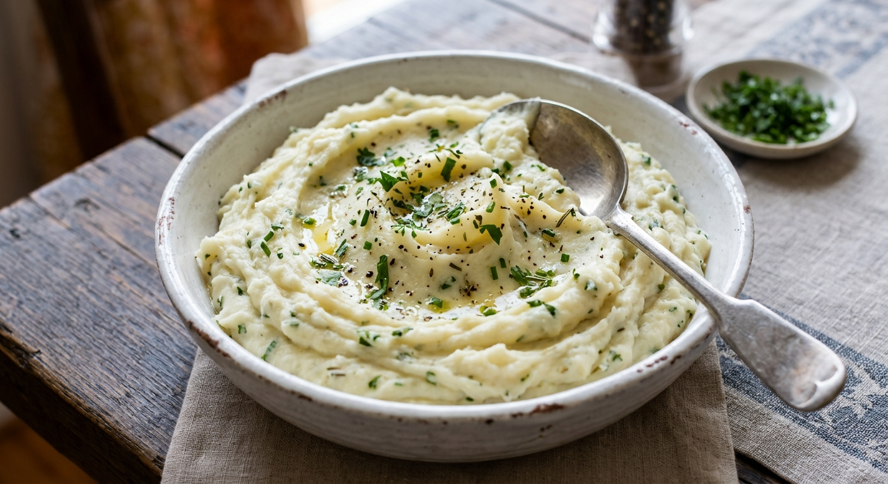

Garlic Herb Mashed Potatoes

Mashed potatoes are on almost every holiday table, and these are rich and creamy with a gentle garlic flavor. Warming the butter and milk with the garlic first infuses the potatoes without any raw garlic bite.
Yukon Gold potatoes give a naturally buttery texture. Follow the steps below and you will get smooth, fluffy potatoes without gluey lumps.
Ingredients
- 3 lb Yukon Gold potatoes, peeled and cut into 1 1/2-inch chunks
- 1 tbsp salt, for the cooking water, plus more to taste
- 4 tbsp (1/2 stick) unsalted butter
- 4 cloves garlic, minced
- 1/2 to 3/4 cup whole milk or half-and-half, warmed
- 1/4 cup sour cream (optional)
- 2 tbsp chopped fresh chives or parsley
- Black pepper, to taste
Instructions
- Put the potatoes in a large pot, cover with cold water by an inch and add 1 tablespoon of salt. Bring to a boil, then simmer for 15 to 20 minutes until a fork slides in easily.
- While the potatoes cook, melt the butter in a small saucepan over low heat. Add the garlic and cook for 1 to 2 minutes until fragrant but not browned. Add the milk and warm gently.
- Drain the potatoes well and return them to the hot pot for 1 minute to steam off excess moisture.
- Mash with a potato masher or ricer. Add the warm butter mixture gradually until you reach the texture you like, then stir in the sour cream if using.
- Fold in the herbs, season with salt and pepper, and serve hot with an extra pat of butter on top.
Ingredient Notes and Substitutions
Potatoes
Yukon Golds are creamy and forgiving. Russets make a fluffier, lighter mash but absorb more liquid.
Dairy
Warm milk blends in more smoothly than cold. Half-and-half or cream makes the potatoes richer.
Herbs
Chives, parsley, thyme or rosemary all work. Use hearty herbs like rosemary sparingly and chop finely.
Tips for Success
- Cut the potatoes into even pieces so they cook at the same rate.
- Start in cold water so the potatoes cook evenly.
- Never use a blender or food processor. Overworking releases starch and makes the potatoes gluey.
- Add the liquid a little at a time, since potatoes vary in how much they absorb.
Variations
- Stir in 1/2 cup grated Parmesan or sharp cheddar.
- Roast the garlic instead of sautéing it for a sweeter, milder flavor.
- Swap the sour cream for cream cheese for extra richness.
Storage and Make-Ahead
Refrigerate leftovers in an airtight container for 3 to 4 days. Reheat on the stove or in the microwave with a splash of milk, stirring often. To make ahead, keep the finished potatoes warm in a slow cooker on low for up to 2 hours. They can be frozen for about a month, though the texture will be a little less smooth.
Frequently Asked Questions
Why are my mashed potatoes gluey?
They were overworked, usually with a blender or processor. Mash gently by hand or with a ricer.
Can I make them ahead?
Yes. Make them a day ahead, refrigerate, and reheat with extra milk or butter. Or hold them warm in a slow cooker.
How much potato per person?
Plan on about 1/3 to 1/2 pound of raw potatoes per person. This recipe serves about 8.
Do I have to peel them?
No. Yukon Gold skins are thin, so unpeeled potatoes give a more rustic mash.